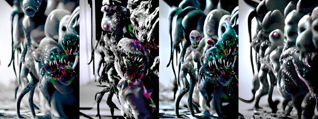

← Async Art — living works · all collections
by Mad Monk · Async Art Master #5833 · four-phase · time rule: UTC
Updates four times a day to reflect sunrise / day / sunset / night cycles.

Sunrise 06:00–06:59 · Day 07:00–17:59 · Sunset 18:00–18:59 · Night 19:00–05:59 (UTC)
The viewer shows these states from display copies kept with this site (resized WebP files; the originals are the files below). The full-size files live on IPFS; each is linked on three public gateways, in the order to try them (gateway.pinata.cloud, ipfs.io, dweb.link). Every line says what our own check found: 5 we keep this file pinned, 1 our own copy, pinned here and verified on upload.
QmPVSUQCTZXEPA… gateway.pinata.cloud · ipfs.io · dweb.link — we keep this file pinned, checked 2026-09-24 11:46Qmdghzo3U53Mov… gateway.pinata.cloud · ipfs.io · dweb.link — we keep this file pinned, checked 2026-09-24 11:46QmWQaecLdS3i5o… gateway.pinata.cloud · ipfs.io · dweb.link — we keep this file pinned, checked 2026-09-24 11:46QmPgMRk6Svjfbv… gateway.pinata.cloud · ipfs.io · dweb.link — we keep this file pinned, checked 2026-09-24 11:46bafybeih6ando7… gateway.pinata.cloud · ipfs.io · dweb.link — our own copy, pinned here and verified on upload, checked 2026-09-22QmYEKUnEifB9nK… gateway.pinata.cloud · ipfs.io · dweb.link — we keep this file pinned, checked 2026-09-24 11:46Qmdghzo3U53Mov… gateway.pinata.cloud · ipfs.io · dweb.link — we keep this file pinned, checked 2026-09-24 11:46Qmdghzo3U53Mov… gateway.pinata.cloud · ipfs.io · dweb.link — we keep this file pinned, checked 2026-09-24 11:46QmPgMRk6Svjfbv… gateway.pinata.cloud · ipfs.io · dweb.link — we keep this file pinned, checked 2026-09-24 11:46QmPVSUQCTZXEPA… gateway.pinata.cloud · ipfs.io · dweb.link — we keep this file pinned, checked 2026-09-24 11:46QmWQaecLdS3i5o… gateway.pinata.cloud · ipfs.io · dweb.link — we keep this file pinned, checked 2026-09-24 11:46"I mean we suspected. They could have come. Sperm seed whatever you call it. But this is insane. Wilder than any conspiracy theory. It's as if science fantasy is the new reality. Spheres, portals long destroyed, alternate universes with real monsters, yes like the ones we thought we imagined but were actually memories of encounters from the First Man. And this yet this this this preposterous revelation that aliens and monsters co-evolved. I have nothing else to say about this. We should bury this. Deep." --- Classified Document AL12-M4988 ... Alien Monster Coevolution by Mad Monk 4 artworks Minted 1/1 on Async Art, March 2022
async.art · OpenSea · Etherscan
Generated archive pages. Content identifiers point to the public IPFS network.